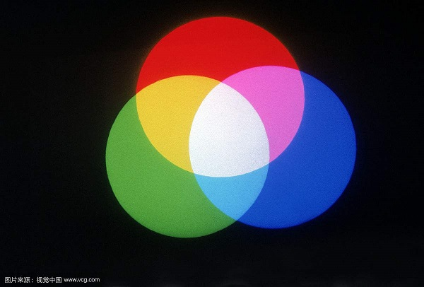

三原色：红绿蓝还是红绿黄？
小学的美术课时，我们都学习过“三原色”。所谓三原色，即红色、绿色、黄色，其他所有颜色都可由这三种互相独立的颜色混合而得到。
然而，不久以后，在初中的物理课堂上我们又听说了另一种说法：在光学中，三原色分别为红绿蓝，其他颜色的光可由这三种颜色的光组合得到。
究竟哪一种说法才是正确的呢？
其实，这两种说法都是正确的。前一种说法称为“色的三原色”，而后一种说法称为“光的三原色”。
那么，它们究竟有何区别呢？下面将分别介绍。
光的三原色与RGB
光学上的三原色定义如上所述：所有颜色的光都可由红光、蓝光、绿光混合而成。
当三原色的光强均为0时，也即无光时，就得到黑色。夜晚的天空看起来黑漆漆的，就是因为此时没有太阳光的照射。
而当三原色的光强都达到最大并且等量混合时，就得到白光。
那么，计算机是如何存储不同的颜色的呢？答案是采用一种称为RGB的标准。
由于计算机中存储的颜色主要是通过显示器展示出来，而显示器是将三原色的光混合来组成不同颜色的光，因此存储时采用光学上的三原色具有天然的优势。
RGB将待展示颜色对应的三原色光强分别存储。一般来说，每个原色的光强用8个bit来存储，因此可以表示256种光强。因此，RGB总共可以表示2563种不同的颜色
举个例子，黑色对应的三原色强度均为0，因此黑色的RGB表示为#000000。而白色对应的三原色强度均为最大，因此白色的RGB表示为#FFFFFF
而一种常见的颜色，黄色，则可由强度最大的红光和绿光混合得到。因此，黄色的RGB表示为#FFFF00（R255,G255,B0)
用于存储每种原色光强的bit越多，可表示的颜色就越多。一个专有名词--位深度，用于表示存储一个像素的颜色用的bit的数量。如上面的情况中，一个像素的位深度就是24bit。
色的三原色与CMY
而在美术中，三原色的情况则大不相同。画家们作画时并不使用光，而是使用颜料。人们发现，将不同量红、绿、黄的颜料混合在一起时，会得到不同颜色的颜料。与光学的差别是，白色颜料是无法通过混合得到的；而黑色颜料却可以通过等量的三原色颜料混合得到
这是因为，当光照射到颜料上时，颜料将吸收掉特定颜色的光并返回剩余颜色的光。举个例子，红颜料将其他颜色的光全部吸收，而只反射回红光。而将颜料混合时，新的颜料能吸收它的父母颜料能吸收的所有光。
因而，三原色的颜料等量混合时，无法反射回任何颜色的光，就得到了黑色。而白色颜料，则不吸收任何颜色的光。当自然光照射到其上时，等量的红、绿、蓝光被反射回来，于是看起来呈现白色。
美术的三原色在计算机中也能发挥作用。当我们需要将计算机中存储的颜色打印出来时，假如仍然使用RGB，在纸张上就不能得到正确的颜色。此时我们应该使用CMY标准。
CMY标准的三原色分别为青（Cyan）、洋红或品红（Magenta）和黄（Yellow）。与RGB类似，CMY的三原色也可以各用8个bit来表示。
RGB与CMY可以互相转化。
- C = 255 - R
- M = 255 - G
- Y = 255 - Y
今天的漫谈就到这里啦。感谢阅读！